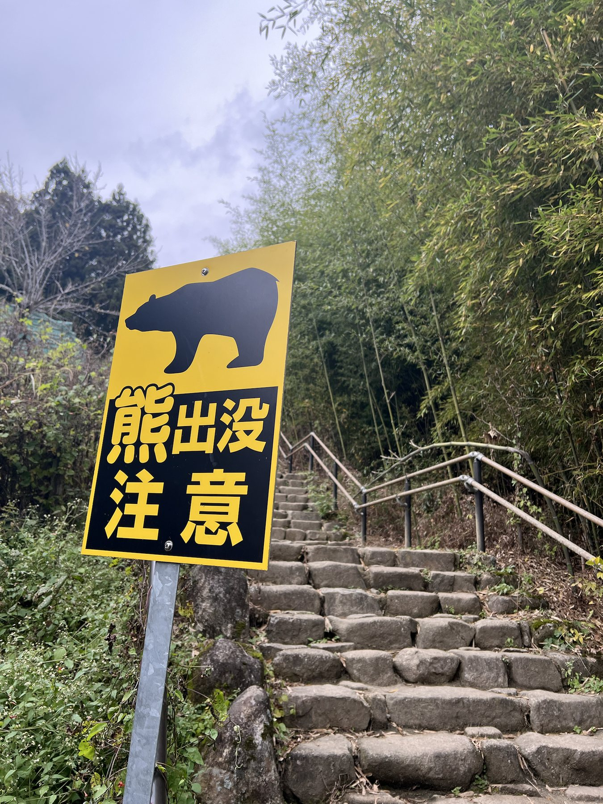
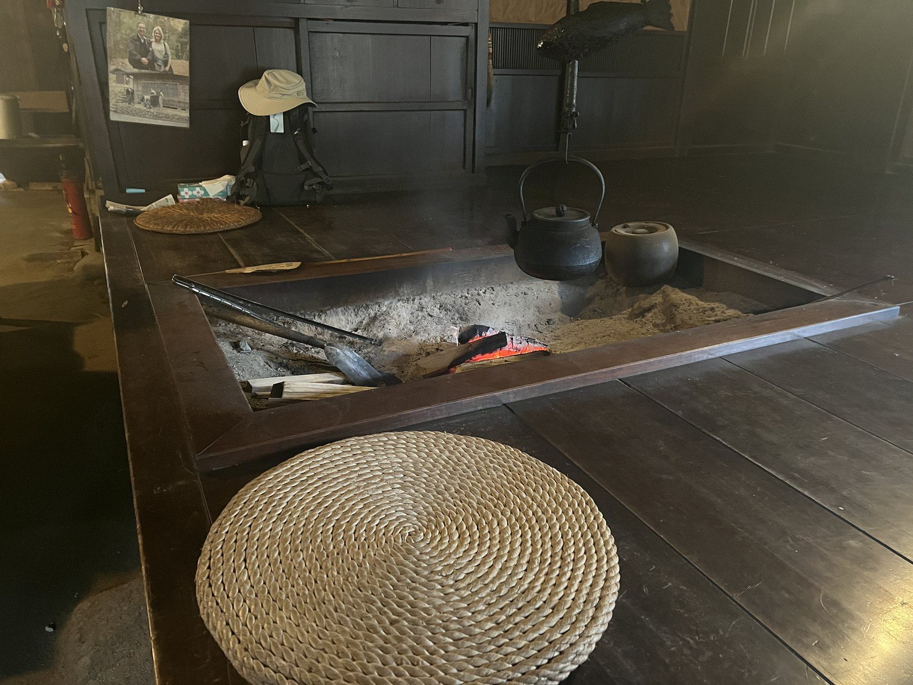
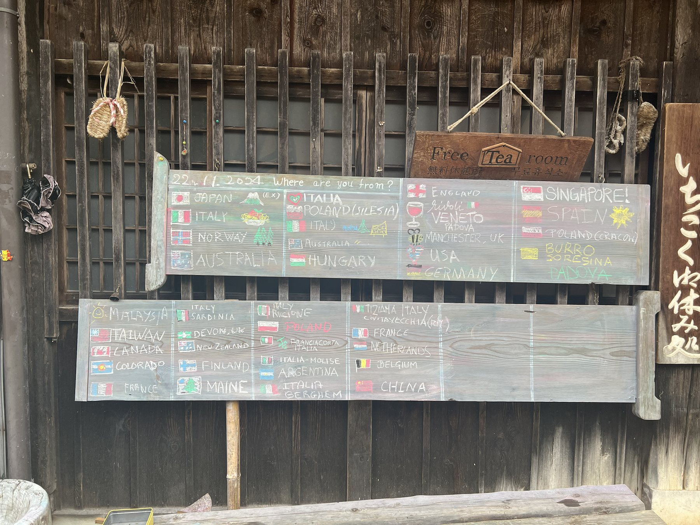
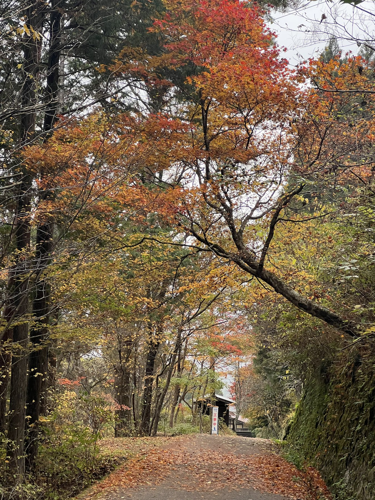
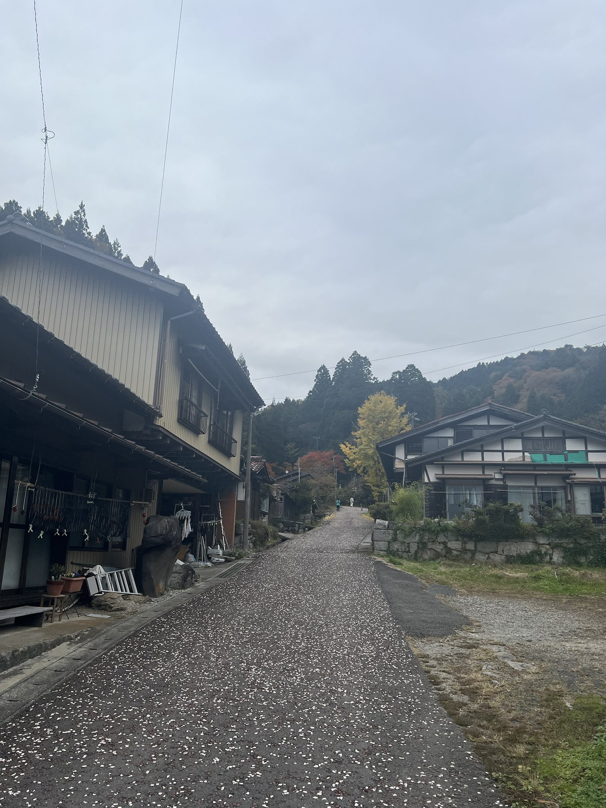
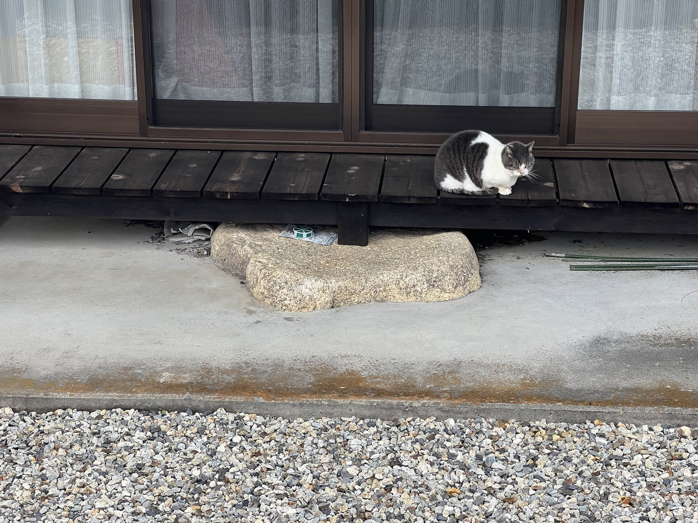

从名古屋去马笼宿，要先乘坐JR，再转一班巴士。
列车抵达与巴士发车之间，只留了八分钟。在很多地方，这样的换乘时间会让人不安：要不要提前一班车？站台会不会很远？行李能不能来得及搬下来？然而，在日本旅行久了以后，人会慢慢产生一种近乎大胆的信任。那八分钟并不是时刻表上的偶然缝隙，而像是经过计算后留下的一道门。只要列车准点，你便可以从容地穿过它。
日本的公共交通似乎并非由一条条彼此独立的线路组成，而是按照人的行程编织起来的。列车知道巴士在等什么，巴士也知道乘客从哪里来。现代交通最体贴的地方，或许不是它有多快，而是它允许一个陌生人放心地把自己交给一张时刻表。
而我要去的，恰好是一条旧路。
马笼宿与妻笼宿，都是古代中山道上的宿场。几百年前，旅人靠双脚翻越木曾的山岭；几百年后，我先被列车和巴士准确地送到古道入口，再重新把自己交还给双脚。速度在这里突然停了下来。
上午十点多，我抵达马笼宿。
天气很好，街上已经挤满游客，其中有不少熟悉的中国口音。跟团游客在老街上聚集、拍照，又在导游的催促声中向前移动。马笼宿的木屋、石坡与招牌固然古雅，但当一条老街被太多镜头同时注视，它便多少失去了让人停留的余地。
我没有准备久留，只想先把行李托运到当晚入住的民宿，然后开始前往妻笼宿的徒步。
办理托运时，几位中国阿姨正围着旅游地图研究。她们指着地图上的两处瀑布，问能不能过去看看。我告诉她们，瀑布已经靠近妻笼宿，从这里步行过去要两个多小时。几个人的脸上立即露出了失望。
其实，在我看来，她们大可不必失望。日本旅行地图上的一些“小景”，常常被标注得郑重其事，真到了面前，却不过是一泓水、一块石头、一道并不高的瀑布。若是用中国大山大水的尺度衡量，难免觉得不够壮观。但后来想想，日本人所珍惜的，或许本来也不是奇观。他们只是习惯把一处微小的风景认真地标记下来，让它成为道路上的一个停顿。
这与行李托运倒有些相似。
在古道入口把箱子交出去，徒步结束后，它已经在住宿地等候。这种服务在日本相当成熟，仿佛行李也有自己的旅行路线。人在山中行走，箱子沿着另一套系统悄悄前进，晚上再在一间民宿里重逢。国内目前还很少见到如此普遍的行李运送服务。日本人未必替你做出选择，却常常把选择之后的细节安排得很妥帖。
从马笼到妻笼，大约八九公里，算不上艰苦。游人不多，路上遇到的多是欧美面孔。大家有时前后相随，有时又各自在树林里消失。
沿途经常能够看到熊出没的警告。告示旁悬着一只铃铛，路过的人可以摇一摇，用声音提醒山林里的熊：有人来了。
那是十一月底，我当时想，熊大概已经准备冬眠了，这些提示也许只是日本人一贯的谨慎。以前冬季去北海道，也见过不少相同的告示，我甚至觉得他们多少有些小题大做。后来频繁看到日本各地熊伤人的新闻，才知道山林并不因为被整理得干净，就失去了野性。
我曾跟随专业户外团队徒步，领队告诉我，驱熊最有效的办法未必是铃铛，而是一路大声说话。当然，不是惊声尖叫，而是让野生动物提前知道人的存在。

人与山林最好的相处方式，并不是悄无声息地闯进去，而是礼貌地告诉对方：我正在经过。
古道中途有一处休息点，是一栋很老的木屋。屋里坐着一位老人，守着炉火煮茶。茶水免费供应，任何过路人都可以坐下来喝一杯。

在深山里喝到一杯免费的热茶，让我感到意外。在一个连自动售货机都把价格标注得一丝不苟的国家，这杯没有价格的茶，反而显得格外有人情味。老人没有讲什么道理，只是一遍遍烧水、添茶，看着不同国家的人进来，又离开。
木屋门前立着一块黑板。上面用彩色粉笔画着许多国家的国旗，井井有条，应该都是当天经过这里的旅人留下的。

我找了一圈，没有看到五星红旗，便拿起粉笔，笨拙地补了一面。五颗星画得并不标准，旗面也有些歪，但总算让它出现在了这间山中小屋的门口。
画完以后，我进屋喝茶。等到休息结束，背起包准备继续出发时，发现那面国旗旁边多了一只小兔子。
不知道是谁画的，也不知道为什么画在那里。它只是安静地蹲在我的国旗旁边，像是某个陌生旅人留下的一句无声回应。
旅行中真正让人记住的，往往就是这种毫无准备的瞬间。它没有姓名，也没有后续，却会在人的记忆里停留很久。
徒步进入最后一段时，天空下起了小雨。
原本分散在山路上的人，临近终点时渐渐聚拢，自然形成了一支十几二十人的队伍。大家并不认识，也没有谁组织，只是因为道路收窄、脚步接近，便暂时走到了一起。
经过一处村落时，我注意到路边的房屋实在低矮。我身高一米七，站在屋檐旁都觉得它们像缩小了一号。同行的几位欧美游客大概都有一米九，他们从老屋旁经过时，身体几乎与屋檐齐平。高大的身影和低矮的木屋出现在同一个画面里，像现代人误入了某个按照旧时尺度保留下来的世界。

我的民宿就在抵达妻笼宿之前。
我原本打算先去办理入住，稍作休息，再继续走向妻笼。但到达时还没有到规定的入住时间。抱着试试看的心情询问后，工作人员依然非常礼貌地请我晚些再来。
日本住宿业对于入住时间有一种近乎严肃的坚持。房间也许已经空着，客人也已经站在门外，但时间没有到，事情便还没有发生。它并非针对某个人，而是所有人共同遵守的一条界线。
民宿旁边有一家荞麦面馆，只在中午营业。眼看就要关门，我便先进去吃了一碗面。
经营面馆的是一位上了年纪的老爷爷。虽然只是山间的一间小店，内部依然布置得一丝不苟。屋里光线昏黄，油纸灯笼静静亮着，木头已经有了年代的颜色。人在这样的屋子里坐下，吃什么似乎已经不那么重要。那碗荞麦面只是一个理由，让我暂时进入了这栋老屋的时间。
吃完面，我继续走向妻笼宿。

与马笼相比，妻笼的游人明显少了，老街也显得更加古朴。这里不像一处急于展示自己的景点，更像一个把日常生活藏在旧房子后面的村落。木格窗、低屋檐与石板路都没有太多喧闹，只是安静地维持着旧时的尺度。
我径直去了游客中心，准备购买一张徒步完成证明。
售卖证明的是一位接近古稀的老人。他递给我一支笔，让我自己写上名字。我忽然生出一个念头，请他替我写。
老人愣了一下，有些害羞地摆摆手，嘴里大概嘟囔着自己的字写得不好。我说没关系，请您写就好。
他这才接过笔，低下头，一笔一画地写下我的名字。写完之后，他认真看了看，又略带腼腆地递给我。那不过是一张花钱可以买到的证明，因为多了他的字迹，忽然变成了一件无法复制的东西。
有时候，我们带回家的并不是纪念品，而是一个陌生人曾经认真对待过我们的证据。
傍晚，我回到民宿。
那是一栋很有年头的房子。房间依然使用纸糊的窗格，其中几处已经有了轻微破损。我开关时格外小心，生怕动作稍大，原有的小洞便扩大成需要赔偿的事故。
窗外是一处精心布置过的中庭，旁边摆着好几座猫屋。傍晚时分，一位老奶奶出来喂猫。我与她聊了几句，才知道旅馆附近一共生活着十四只猫，其中大多数原本都是流浪猫。
它们并没有被关在屋里，而是散养在旅馆周围。白天不知去了哪里，到了喂食时间，便从院墙、树丛和木屋后面陆续出现。十四只猫让这间有些衰老的民宿忽然活了起来。它们大概并不理解古道、宿场与文化保存，只知道这里有饭吃，有屋檐避雨，也有人愿意等它们回来。

民宿的服务并不周全。晚上睡觉用的被褥，需要客人自己铺。桌上放着一张说明，详细画着床垫、床单和被子的铺设顺序。
我照着图示，一层层把床铺好。对于习惯了酒店服务的人来说，这多少显得麻烦；但在一整天的徒步之后，亲手为自己铺好一张床，又有一种奇怪的踏实感。
窗外，十四只猫已经渐渐安静。纸窗透进微弱的院灯，山里的夜色落在房间里。我忽然想起白天黑板上的那面五星红旗，以及后来不知被谁添上去的小兔子。
从马笼到妻笼，不过八九公里。瀑布并不壮观，山路也算不上险峻。真正被我带走的，是一杯不收费的热茶，一只来历不明的兔子，一个老人替我写下的名字，以及一群在老旅馆周围生活的猫。
古道之所以能够留到今天，或许不只是因为石板和木屋被保存了下来。
一条道路真正的历史，从来不是它通往哪里，而是曾经有什么人在这里停留，又为后来的人留下了什么。